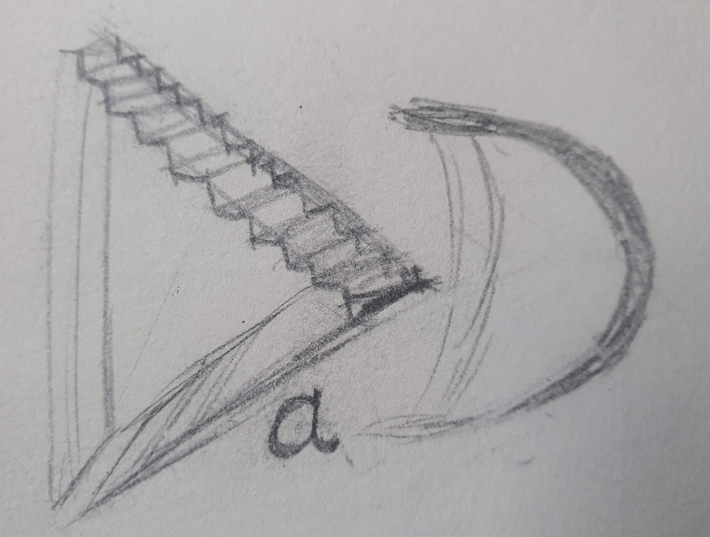
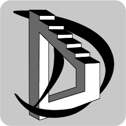
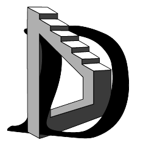
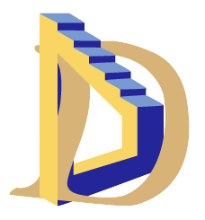

Draw a Dream

Draw a Dream est une application pour tablettes pour apprendre le surréalisme aux enfants avec humour et créativité
Status : En cours
Ce projet réalisé en cours est principalement fait pour la recherche d'une DA.
J'ai donc d'abord réalisé un moodboard pour définir l'ambiance de l'application avec des oeuvres que j'ai sélectionné.
Le but était de ressortir des motifs et des couleurs ainsi que des formes pour le logo.
J'ai fais le choix d'un triangle pour le premier D pour représenter l'art et la créativité,
et du second D plus arrondi pour représenter l'enfant, le flou du rêve mais aussi le côté humaniste de ce mouvement.
J'ai fais des concepts de logo, d'abord sur papier puis sur Illustrator.
avec l'introduction de l'escalier d'Escher
sans polices choisies, dessinée à la main
avec des polices choisies
avec un premier test de couleurs

J'ai ensuite produit une maquette de l'application sur Figma, en prenant en compte les contraintes techniques et les besoins de l'utilisateur. J'ai réalisé des wireframes pour définir les différentes pages de l'application et les interactions possibles. J'ai ensuite réalisé les écrans de la partie dessin de l'application.
J'ai ensuite produit une maquette de l'application sur Figma, en prenant en compte les contraintes techniques et les besoins de l'utilisateur. J'ai réalisé des wireframes pour définir les différentes pages de l'application et les interactions possibles. J'ai ensuite réalisé les écrans de la partie dessin de l'application.